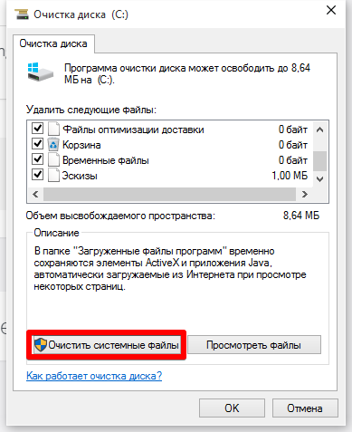

1. Нажмите комбинацию клавиш Windows + R, в появившемся окне наберите cleanmgr, и нажмите OK, выберите диск на котором установлена ОС.
2. В появившемся окне, нажать кнопку: Очистить системные файлы

3. Убедится, что выбран пункт: Файлы предыдущей установленной windows. И нажать ОК, подтвердив удаление файлов.